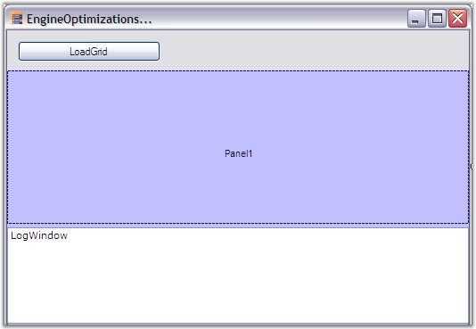
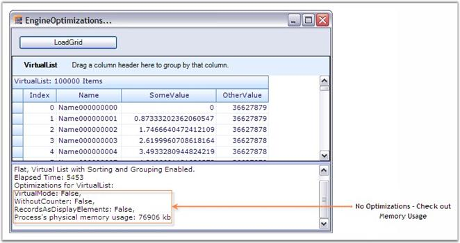
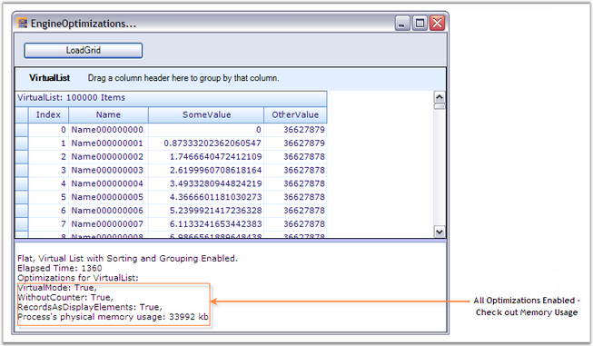
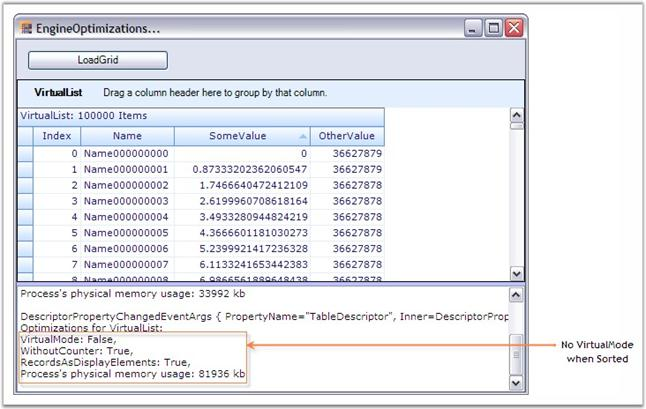
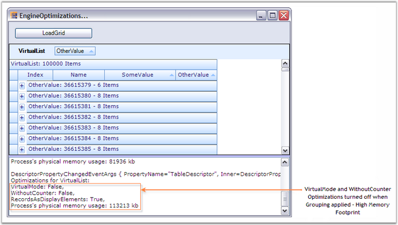

This section discusses the various optimizations that GroupingEngine provides. EngineOptimizations will greatly help to improve Memory Performance. Triggering these optimizations selectively will help a lot in reducing the memory footprint.
Engine optimizations can be enabled by setting AllowOptimizations to some value other than None. To optimize the memory usage, CounterLogic property needs to be assigned with a proper value.
AllowOptimizations
The following is the list of optimizations the grid offers which are defined by EngineOptimizations enumeration. By default they are turned off, but you can tell the engine which optimizations should be applied when the specified criteria for the optimizations met.
· EngineOptimizations Enumeration
Specifies the values for AllowedOptimizations property.
· None
All optimizations are disabled.
· DisableCounters
When the engine detects that a table does not have RecordFilters, GroupedColumns or nested relations, counter logic will be disabled for the RecordsDetails collection since all counters are in sync with actual records (e.g. all records in data source are shown in TopLevelGroup). With this optimization the engine does still have full support for sorting.
· VirtualMode
When all criteria are met for the optimization and in addition to that no SortedColumns are set, the RecordsDetails collection does not have to be initialized at all. Instead, it can create records elements on demand and discard them using regular garbage collection when no references to a Record exist any more (e.g. once you scroll them out of view). This approach reduces memory footprint to absolute minimum. You should be able to load and display millions of records in a table. The PrimaryKey collection is still supported, but it will be initialized only on demand if you do access the Table.PrimaryKeyRecords collection. In such case all records will be enumerated.
· PassThroughSort
When all criteria are met for the optimization and SortedColumns are set, the engine will normally have to loop through records and sort them. When you specify the engine will check if the data source is an IBindingList and if IBindingList.SupportsSort returns true. In such case the data source will be sorted using its IBindingList.Sort routine and the engine will access records using VirtualMode. Using the IBindingList is usually a bit faster than the engines own sorting routines, but the disadvantage is that you will loose CurrentRecord and SelectedRecords information. Also, inserting and removing records will be slower (especially if the underlying data source is a DataView).
PassThroughSort will be ignored if criteria are met for the optimization are not met. If you want to force a Pass-through sort mechanism in such case, it can be done by implementing the IGroupingList interface. This allows performing the sort on the dataview directly instead of letting the grouping engine perform the sorting. Normally, it is recommended to use the engines own Sort mechanism and only rely on PassThroughSort for Virtual mode scenarios.
· RecordsAsDisplayElements
When the engine detects that records do not have nested child tables, no record preview rows are being used and each record only has one row (no ColumnSets are used), records do not have to be split into RecordParts. Instead when querying the DisplayElements collection for a specific row, the engine can simply return a Record element instead of a RecordRow element. The same applies to CaptionSection, ColumnHeaderSection and FilterBarSection. Instead of returning a CaptionRow, ColumnHeaderRow or FilterBarRow element the DisplayElements collection returns the section element. If you use this optimization you need to be careful in your own code and be aware that when you query the DisplayElements collection instead of a RecordRow element a Record element can be returned. Same issue is also with ColumnHeader, FilterBase and Caption.
· All
Enables the optimizations - DisableCounters, VirtualMode and RecordsAsDisplayElements.
Based on the schema that you specify the engine will determine if certain optimizations can be applied. If you do have a flat table and do not sort the records VirtualMode will be applied and the records don't have to be touched at all (only when drawing). If you sort records then TreeTables will be built so that the grid can sort the records but the logic for filtering and grouping is turned off (DisableCounters optimization). In case of pass-through sorting, the table is sorted by using the DataView.Sort routine and records will be accessed with VirtualMode. If you group records or if you have nested tables then full grouping logic will be needed.
· CounterLogic
In addition to being able to specify VirtualMode or WithoutCounter mode, you can also specify which counters you need. Most of the times you only want to count visible elements and filtered records and you can leave out custom counters, hidden element counter and others. That can save you a few bytes per record (40-80 bytes). The engine will also determine whether records actually need to be broken into pieces or if a record can be returned as leave elements (RecordsAsDisplayElements option). This again saves a few bytes per record.
o EngineCounters Enumeration
Specifies the values for CounterLogic.
o All
All counters are supported: visible elements, filtered records, YAmount, hidden elements, hidden records, CustomCount and VisibleCustomCount. Highest memory footprint.
o FilteredRecords
Counts only visible elements and filtered records. Smallest memory footprint.
o YAmount
Counts visible elements, filtered records and YAmount. Medium memory footprint.
 Note:
Allowing certain optimizations does not mean that the optimization is
necessarily used. Optimizations will only be used when applicable. Take for
example the optimization. If you allow this optimization the engine will check
schema settings when loading the table. If there are no SortedColumns,
RecordFilters, GroupedColumns and no nested relations for a table, then virtual
mode can be used and no records need to be loaded into memory. If the user later
sorts by one column, the virtual mode cannot be used any more. Records will need
to be iterated through and sorted and tree structures will be built that allow
quick access to records and IndexOf operations. When initializing the table the
engine will check if criteria for DisableCounters optimization are
met.
Note:
Allowing certain optimizations does not mean that the optimization is
necessarily used. Optimizations will only be used when applicable. Take for
example the optimization. If you allow this optimization the engine will check
schema settings when loading the table. If there are no SortedColumns,
RecordFilters, GroupedColumns and no nested relations for a table, then virtual
mode can be used and no records need to be loaded into memory. If the user later
sorts by one column, the virtual mode cannot be used any more. Records will need
to be iterated through and sorted and tree structures will be built that allow
quick access to records and IndexOf operations. When initializing the table the
engine will check if criteria for DisableCounters optimization are
met.
Example
This example illustrates the Virtual Mode and WithoutCounter optimizations having a VirtualList as the data source. The VirtualList is just a CustomCollection that implements IList and ITypedList interfaces. The list is populated with 100K items and the same is bound to the grid grouping control. The example also displays a Log Window where you could track the different optimizations applied at different instances. It also displays the time elapsed for populating the grid grouping control.
All the optimizations are enabled by setting AllowedOptimizations to All. As said earlier, the optimizations specified will not be applied at all times. They will only be used when applicable, that is, when the criteria for those optimizations are met. This example best illustrates this process. On every property change, the log window displays the list of optimizations applied to the grid at that instance. When you run the sample, you could be able to track the optimizations applied in different engine states like with/without grouping, with/without sorting, etc.
Note: For more
details, refer the following Browser Sample:
<Install Location>\Syncfusion\EssentialStudio\[Version Number]\Windows\Grid.Grouping.Windows\Samples\2.0\Performance\Engine Optimization Demo
Implementation
Follow the steps below to experiment different engine optimizations.
1. Create a class (VirtualItem) that represents the record structure. It's data members form the record fields.
|
[C#]
public class VirtualItem { int index; string name; double someValue; double otherValue;
public int Index { get { return index; } set { index = value; } } public string Name { get { return name; } set { name = value; } } public double SomeValue { get { return someValue; } set { someValue = value; } } public double OtherValue { get { return otherValue; } set { otherValue = value; } } } |
|
[VB]
Public Class VirtualItem Private index_Renamed As Integer Private name_Renamed As String Private someValue_Renamed As Double Private otherValue_Renamed As Double
Public Property Index() As Integer Get Return index_Renamed End Get Set index_Renamed = Value End Set End Property Public Property Name() As String Get Return name_Renamed End Get Set name_Renamed = Value End Set End Property Public Property SomeValue() As Double Get Return someValue_Renamed End Get Set someValue_Renamed = Value End Set End Property Public Property OtherValue() As Double Get Return otherValue_Renamed End Get Set otherValue_Renamed = Value End Set End Property End Class |
2. Create another class(VirtualList) by implementing IList and ITypedList interfaces. This class represents your collection that serves as the data source for the grid grouping control. Refer CustomCollections to know about how to implement these interfaces.
|
[C#]
public class VirtualList : IList, ITypedList { int virtualCount; public VirtualList(int count) { virtualCount = count; }
// IList Members. public bool IsReadOnly { get { return true; } }
public object this[int index] { get { VirtualItem item = new VirtualItem(); item.Index = index; item.Name = "Name" + index.ToString("000000000"); item.SomeValue = index*0.873332f; item.OtherValue = (293023033-index)/8;
return item; } set{} }
// Other IList members. ............ ............
// ICollection Members. ............ ............
// IEnumerator Members. ............ ............
// ITypedList Members. public PropertyDescriptorCollection GetItemProperties(PropertyDescriptor[] listAccessors) { PropertyDescriptorCollection pds = TypeDescriptor.GetProperties(typeof(VirtualItem)); string[] atts = new string[]{"Index", "Name", "SomeValue", "OtherValue"}; return pds.Sort(atts); }
public string GetListName(PropertyDescriptor[] listAccessors) { return "VirtualList"; } } |
|
[VB] Public Class VirtualList : Implements IList, ITypedList Private virtualCount As Integer
Public Sub New(ByVal count_Renamed As Integer) virtualCount = count_Renamed End Sub
' IList Members. Public ReadOnly Property IsReadOnly() As Boolean Implements IList.IsReadOnly Get Return True End Get End Property
Public Default Property Item(ByVal index As Integer) As Object Get Dim item As VirtualItem = New VirtualItem() item.Index = index item.Name = "Name" & index.ToString("000000000") item.SomeValue = index*0.873332f item.OtherValue = (293023033-index)/8 Return item End Get Set End Set End Property
' Other IList Members. ............ ............
' ICollection Members. ............ ............
' IEnumerable Members. ............ ............
' ITypedList Members. Public Function GetItemProperties(ByVal listAccessors As PropertyDescriptor()) As PropertyDescriptorCollection Implements ITypedList.GetItemProperties Dim pds As PropertyDescriptorCollection = TypeDescriptor.GetProperties(GetType(VirtualItem)) Dim atts As String() = New String() {"Index", "Name", "SomeValue", "OtherValue"} Return pds.Sort(atts) End Function
Public Function GetListName(ByVal listAccessors As PropertyDescriptor()) As String Implements ITypedList.GetListName Return "VirtualList" End Function End Class |
3. Add a button and listbox to the main form. Clicking the button will create a grid grouping control and load it with the Virtual List. ListBox serves as the Log Window where in you will display the log messages like time elapsed for loading the grid, list of optimizations applied, and so on. Your form will look like the one below at design time.

Figure 253: Loading Grid Grouping Control
4. Set up a new engine and specify the optimizations settings required.
|
[C#]
GridEngine schema = new GridEngine(); schema.InvalidateAllWhenListChanged = false; schema.AllowedOptimizations = EngineOptimizations.All; schema.CounterLogic = EngineCounters.YAmount;
// Also dependant on CounterLogic = EngineCounters.YAmount. schema.TableOptions.VerticalPixelScroll = true; schema.TableOptions.ColumnsMaxLengthStrategy = GridColumnsMaxLengthStrategy.FirstNRecords; schema.TableOptions.ColumnsMaxLengthFirstNRecords = 100; schema.TableOptions.AllowSortColumns = true; schema.TableDescriptor.AllowEdit = false; schema.DataSource = new VirtualList(100000); schema.Reset(); schema.TableDescriptor.Columns["Index"].MaxLength = 10; |
|
[VB]
Dim schema As GridEngine = New GridEngine() schema.InvalidateAllWhenListChanged = False schema.AllowedOptimizations = EngineOptimizations.All schema.CounterLogic = EngineCounters.YAmount
' Also dependant on CounterLogic = EngineCounters.YAmount. schema.TableOptions.VerticalPixelScroll = True schema.TableOptions.ColumnsMaxLengthStrategy = GridColumnsMaxLengthStrategy.FirstNRecords schema.TableOptions.ColumnsMaxLengthFirstNRecords = 100 schema.TableOptions.AllowSortColumns = True schema.TableDescriptor.AllowEdit = False schema.DataSource = New VirtualList(100000) schema.Reset() schema.TableDescriptor.Columns["Index"].MaxLength = 10 |
5. Define a method LogMemoryUsage that calculates the amount of memory consumed and displays various optimizations applied to the grouping engine.
|
[C#]
void LogMemoryUsage() { // Force garbage collection and get used memory size. GC.Collect(); System.Threading.Thread.Sleep(10); GC.Collect(); System.Threading.Thread.Sleep(100); GC.Collect(); LogWindow.Items.Add(string.Format("Optimizations for {0}: ", this.gridGroupingControl1.TableDescriptor.Name)); LogWindow.Items.Add(string.Format("VirtualMode: {0}, ", this.gridGroupingControl1.Table.VirtualMode)); LogWindow.Items.Add(string.Format("WithoutCounter: {0}, ", this.gridGroupingControl1.Table.WithoutCounter)); LogWindow.Items.Add(string.Format("RecordsAsDisplayElements: {0}, ", gridGroupingControl1.Table.RecordsAsDisplayElements));
Process myProcess = Process.GetCurrentProcess(); double workingSetSizeinKiloBytes = myProcess.WorkingSet64 / 1000; string s = "Process's physical memory usage: " + workingSetSizeinKiloBytes.ToString() + " kb"; LogWindow.Items.Add(s); LogWindow.Items.Add(""); } |
|
[VB.NET]
Private Sub LogMemoryUsage()
' Force garbage collection and get used memory size. GC.Collect() System.Threading.Thread.Sleep(10) GC.Collect() System.Threading.Thread.Sleep(100) GC.Collect() LogWindow.Items.Add(String.Format("Optimizations for {0}: ", Me.gridGroupingControl1.TableDescriptor.Name)) LogWindow.Items.Add(String.Format("VirtualMode: {0}, ", Me.gridGroupingControl1.Table.VirtualMode)) LogWindow.Items.Add(String.Format("WithoutCounter: {0}, ", Me.gridGroupingControl1.Table.WithoutCounter)) LogWindow.Items.Add(String.Format("RecordsAsDisplayElements: {0}, ", gridGroupingControl1.Table.RecordsAsDisplayElements))
Dim myProcess As Process = Process.GetCurrentProcess() Dim workingSetSizeinKiloBytes As Double = myProcess.WorkingSet64 / 1000 Dim s As String = "Process's physical memory usage: " & workingSetSizeinKiloBytes.ToString() & " kb" LogWindow.Items.Add(s) LogWindow.Items.Add("") End Sub |
6. Handle the ButtonClick event in order to populate the grid when the button is clicked. It also calls LogMemoryUsage method to display the initial optimization settings for the grid - the optimizations for an ungrouped and unsorted grid.
|
[C#]
this.button1.Click += new System.EventHandler(this.button1_Click);
private void button1_Click(object sender, EventArgs e) { this.LogWindow.Items.Add(""); this.LogWindow.Items.Add("Flat, Virtual List with Sorting and Grouping Enabled."); int time = Environment.TickCount; Cursor.Current = Cursors.WaitCursor;
// Load a Grid Grouping control with a new engine. gridGroupingControl1 = new GridGroupingControl(); gridGroupingControl1.BackColor = System.Drawing.SystemColors.Window; gridGroupingControl1.Dock = System.Windows.Forms.DockStyle.Fill; gridGroupingControl1.Name = "gridGroupingControl1"; gridGroupingControl1.TabIndex = 0; gridGroupingControl1.VersionInfo = "3.2.0.0"; gridGroupingControl1.IntelliMousePanning = true; this.splitContainer1.Panel1.Controls.Add(this.gridGroupingControl1); gridGroupingControl1.Engine = schema; gridGroupingControl1.DataSource = new TestEngineOptimizations.VirtualList(100000); gridGroupingControl1.ShowGroupDropArea = true; this.Refresh();
Cursor.Current = Cursors.Arrow; this.LogWindow.Items.Add(string.Format("Elapsed Time: {0}", Environment.TickCount - time)); gridGroupingControl1.Appearance.AnyCell.Font.Facename = "Verdana"; gridGroupingControl1.Appearance.AnyCell.TextColor = Color.MidnightBlue; gridGroupingControl1.TableOptions.GridVisualStyles = Syncfusion.Windows.Forms.GridVisualStyles.Office2007Blue; gridGroupingControl1.TableOptions.GridLineBorder = new GridBorder(GridBorderStyle.Solid, Color.FromArgb(227, 239, 255), GridBorderWeight.Thin);
// Initial Log Display. LogMemoryUsage(); } |
|
[VB.NET]
Private Sub button1_Click(ByVal sender As Object, ByVal e As EventArgs) Handles button1.Click Me.LogWindow.Items.Add("") Me.LogWindow.Items.Add("Flat, Virtual List with Sorting and Grouping Enabled.") Dim time As Integer = Environment.TickCount Windows.Forms.Cursor.Current = Cursors.WaitCursor
' Load a Grid Grouping control with a new engine. gridGroupingControl1 = New GridGroupingControl() gridGroupingControl1.BackColor = System.Drawing.SystemColors.Window gridGroupingControl1.Dock = System.Windows.Forms.DockStyle.Fill gridGroupingControl1.Name = "gridGroupingControl1" gridGroupingControl1.TabIndex = 0 gridGroupingControl1.VersionInfo = "3.2.0.0" gridGroupingControl1.IntelliMousePanning = True Me.splitContainer1.Panel1.Controls.Add(Me.gridGroupingControl1) gridGroupingControl1.Engine = schema gridGroupingControl1.DataSource = New TestEngineOptimizations.VirtualList(100000) gridGroupingControl1.ShowGroupDropArea = True Me.Refresh()
Cursor.Current = Cursors.Arrow Me.LogWindow.Items.Add(String.Format("Elapsed Time: {0}", Environment.TickCount - time)) gridGroupingControl1.Appearance.AnyCell.Font.Facename = "Verdana" gridGroupingControl1.Appearance.AnyCell.TextColor = Color.MidnightBlue gridGroupingControl1.TableOptions.GridVisualStyles = GridVisualStyles.Office2007Blue gridGroupingControl1.TableOptions.GridLineBorder = New GridBorder(GridBorderStyle.Solid, Color.FromArgb(227, 239, 255), GridBorderWeight.Thin)
' Initial Log Display. LogMemoryUsage() End Sub |
7. Handle PropertyChanging event to display the log for every property that is being changed in the grid. This will be raised when you group or sort the grid grouping control and hence you could track the results of these operations (especially the current optimizations) here.
|
[C#]
gridGroupingControl1.PropertyChanging += new DescriptorPropertyChangedEventHandler(gridGroupingControl1_PropertyChanging);
Timer t = null; void gridGroupingControl1_PropertyChanging(object sender, DescriptorPropertyChangedEventArgs e) { LogWindow.Items.Add(e.ToString()); if (t != null) { t.Tick -= new EventHandler(t_Tick); t.Dispose(); } t = new Timer(); t.Interval = 100; t.Tick += new EventHandler(t_Tick); t.Start(); }
private void t_Tick(object sender, EventArgs e) { Timer t = (Timer)sender; t.Tick -= new EventHandler(t_Tick); t.Dispose(); this.LogMemoryUsage(); } |
|
[VB.NET]
AddHandler gridGroupingControl1.PropertyChanging, AddressOf gridGroupingControl1_PropertyChanging
Private t As Timer = Nothing Private Sub gridGroupingControl1_PropertyChanging(ByVal sender As Object, ByVal e As DescriptorPropertyChangedEventArgs) LogWindow.Items.Add(e.ToString()) If Not t Is Nothing Then RemoveHandler t.Tick, AddressOf t_Tick t.Dispose() End If t = New Timer() t.Interval = 100 AddHandler t.Tick, AddressOf t_Tick t.Start() End Sub
Private Sub t_Tick(ByVal sender As Object, ByVal e As EventArgs) Dim t As Timer = CType(sender, Timer) RemoveHandler t.Tick, AddressOf t_Tick t.Dispose() Me.LogMemoryUsage() End Sub |
8. Here are the screen shots that show the optimizations applied at different engine states.

Figure 254: Grid Grouping control with No Optimizations Enabled

Figure 255: Grid Grouping control at StartUp - LogWindow displays Initial Optimizations Enabled
(Optimizations - All)

Figure 256: Log displays optimizations after Sorting the Grid
(Virtual Mode disabled)

Figure 257: LogWindow displays Optimizations for Grid Grouping control with Sorting Applied
(Both Virtual Mode and WithoutCounter optimizations disabled)